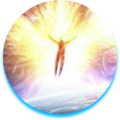
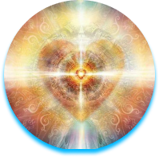

+7(980) 635-49-83
+7(900) 010-96-09
Волонтерское сообщество Тверского государственного университета и Тверское объединение Мастеров Рейки (обновленной классической школы Рейки Микао Усуи) проводит благотворительные акции «Добрая помощь» для беженцев, пенсионеров, малоимущих слоев населения, многодетных семей в качестве оказания им психологической поддержки в трудных жизненных ситуациях, сохранения и восстановления здоровья и социальной реабилитации.
Для того, чтобы найти ответ на этот вопрос появилась наука валеология, изучающая внутренние резервы человеческого организма, пути их увеличения. Мы предлагаем вам комплексную программу, направленную на обретение физического здоровья,душевного комфорта,материального благосотояния и сильной сбалансированной энергетики. Программа содержит 3 этапа
физического тела и тонких тел, снятие психологических блоков,мешающих постановке и достижения целей
энергетических потоков, овладение техниками постановки и достижения поставленных задач
состояния здоровья, обретение личной силы
- кандидат психологических наук,доцент ТВГУ, Заслуженный работник высшего профессионального образования, практикующий психолог,музыкотерапевт.
– Гранд Мастер РЕЙКИ обновленной системы исцеления классической школы Микао Усуи, квалифицированный массажист, имеющий сертификат Национальной профессиональной ассоциации специалистов народной медицины и оздоровительных практик.
ПОМОГУ: Справиться с тревожностью. Понять причины беспокойства и обрести гармонию с собой.
Осознать планы и цели на жизнь. Найти свой карьерный путь и дело, в котором вы будете расти и развиваться.
Наладить отношения с близкими. Выстроить конструктивный диалог с семьей, друзьями, деловыми и личными партнерами.
Строить комфортную коммуникацию в любых ситуациях. Научиться выстраивать личные границы.
Справиться с кризисной ситуацией, найти силы для гармоничной жизни.
Опыт консультирования 25 лет.
О методике
ПОМОГУ: Ознакомиться с обновленной системой РЕЙКИ и жизненными задачами, которые можно решить с помощью этих энергетических практик и посвящений.
Выявить сферы жизни, которые требуют вашего личного внимания.
Восстановить физиологическое и психологическое состояние здоровья.
Устранить плохое самочувствие, упадок сил (физических и душевных), хронические недомогания, депрессию, плохой сон.
Вы почувствуете свой потенциал, силу жизненной энергии и поймёте как можно решать конкретные жизненные задачи через внутреннюю работу над собой.
С помощью моей практики обнаружим и устраним: Проблемы в тонком и физическом теле человека, вызывающие его разрушение. Остановим программы разрушения здоровья.
Основы психологических знаний в области семейной, детской и социальной психологии
Оздоровительным практикам различного направления для восстановления своего личного здоровья и здоровья своих близких.
О видео-медитации